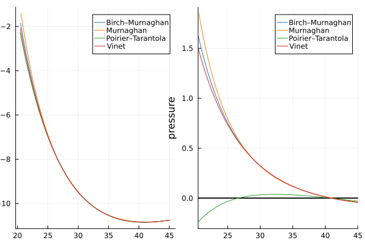

Examples
Here is an example of plotting four equations of state in one figure with energy and pressure versus volume.
We can plot these parameters directly using shorthand functions such as energyplot, pressureplot, bulkmodulusplot:
julia> using EquationOfStateRecipesjulia> using EquationsOfStateOfSolidsjulia> using Plotsjulia> bm = BirchMurnaghan3rd(40.989265727926536, 0.5369258245609575, 4.178644231927682, -10.8428039082991);julia> m = Murnaghan1st(41.13757924604193, 0.5144967654094419, 3.9123863221667086, -10.836794510844241);julia> pt = PoirierTarantola3rd(40.86770643567071, 0.5667729960008748, 4.331688934947504, -10.851486685029437);julia> v = Vinet(40.9168756740098, 0.5493839427843088, 4.3051929493806345, -10.846160810983498);julia> plot(; legend=true);julia> bulkmodulusplot!(bm; label="Birch–Murnaghan");julia> bulkmodulusplot!(bm; label="Murnaghan");julia> bulkmodulusplot!(pt; label="Poirier–Tarantola");julia> bulkmodulusplot!(v; label="Vinet");julia> title!(raw"$B(V)$");qt.qpa.xcb: could not connect to display qt.qpa.plugin: Could not load the Qt platform plugin "xcb" in "" even though it was found. This application failed to start because no Qt platform plugin could be initialized. Reinstalling the application may fix this problem. Available platform plugins are: minimal, minimalegl, eglfs, offscreen, linuxfb, vnc, xcb. Aborted (core dumped) connect: Connection refused GKS: can't connect to GKS socket application GKS: Open failed in routine OPEN_WS GKS: GKS not in proper state. GKS must be either in the state WSOP or WSAC in routine ACTIVATE_WS
Of course, we can construct four equations of state from those parameters and plot them:
julia> bmeos = EnergyEquation(bm);julia> meos = EnergyEquation(m);julia> pteos = EnergyEquation(pt);julia> veos = EnergyEquation(v);julia> plot(; legend=true);julia> plot!(bmeos; label="Birch–Murnaghan");julia> plot!(meos; label="Murnaghan");julia> plot!(pteos; label="Poirier–Tarantola");julia> plot!(veos; label="Vinet");julia> title!(raw"$E(V)$");qt.qpa.xcb: could not connect to display qt.qpa.plugin: Could not load the Qt platform plugin "xcb" in "" even though it was found. This application failed to start because no Qt platform plugin could be initialized. Reinstalling the application may fix this problem. Available platform plugins are: minimal, minimalegl, eglfs, offscreen, linuxfb, vnc, xcb. Aborted (core dumped) connect: Connection refused GKS: can't connect to GKS socket application GKS: Open failed in routine OPEN_WS GKS: GKS not in proper state. GKS must be either in the state WSOP or WSAC in routine ACTIVATE_WS
Or, we can plot subplots with:
julia> colors = palette(:tab10);julia> labels = ["Birch–Murnaghan", "Murnaghan", "Poirier–Tarantola", "Vinet"];julia> plt = plot(; layout=(1, 2));julia> for (params, label, color) in zip((bm, m, pt, v), labels, colors) energyplot!(plt, params; label=label, subplot=1, color=color); pressureplot!(plt, params; label=label, subplot=2, color=color); endqt.qpa.xcb: could not connect to display qt.qpa.plugin: Could not load the Qt platform plugin "xcb" in "" even though it was found. This application failed to start because no Qt platform plugin could be initialized. Reinstalling the application may fix this problem. Available platform plugins are: minimal, minimalegl, eglfs, offscreen, linuxfb, vnc, xcb. Aborted (core dumped) connect: Connection refused GKS: can't connect to GKS socket application GKS: Open failed in routine OPEN_WS GKS: GKS not in proper state. GKS must be either in the state WSOP or WSAC in routine ACTIVATE_WS

Also, we can add units to these equations of state without any difficulty:
julia> using Unitful, UnitfulAtomicjulia> bm = BirchMurnaghan3rd(40.989265727926536u"angstrom^3", 0.5369258245609575u"Ry/angstrom^3", 4.178644231927682, -10.8428039082991u"Ry");julia> m = Murnaghan1st(41.13757924604193u"angstrom^3", 0.5144967654094419u"Ry/angstrom^3", 3.9123863221667086, -10.836794510844241u"Ry");julia> pt = PoirierTarantola3rd(40.86770643567071u"angstrom^3", 0.5667729960008748u"Ry/angstrom^3", 4.331688934947504, -10.851486685029437u"Ry");julia> v = Vinet(40.9168756740098u"angstrom^3", 0.5493839427843088u"Ry/angstrom^3", 4.3051929493806345, -10.846160810983498u"Ry");julia> plt = plot(energyplot(bm; label="Birch–Murnaghan", yunit=u"eV"), pressureplot(bm; label="Birch–Murnaghan", yunit=u"GPa"));julia> for (params, label, color) in zip((m, pt, v), labels, colors) energyplot!(plt, params; label=label, subplot=1, color=color); pressureplot!(plt, params; label=label, subplot=2, color=color); endqt.qpa.xcb: could not connect to display qt.qpa.plugin: Could not load the Qt platform plugin "xcb" in "" even though it was found. This application failed to start because no Qt platform plugin could be initialized. Reinstalling the application may fix this problem. Available platform plugins are: minimal, minimalegl, eglfs, offscreen, linuxfb, vnc, xcb. Aborted (core dumped) connect: Connection refused GKS: can't connect to GKS socket application GKS: Open failed in routine OPEN_WS GKS: GKS not in proper state. GKS must be either in the state WSOP or WSAC in routine ACTIVATE_WS